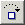
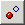
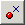

The FKiSS Editor Toolbar is a menu at the top of the screen that displays icons for common functions. The toolbar icons and their functions are shown below.
 New event.
The New Event command creates one or more new event definitions within the
current KiSS configuration. The New Event command opens an empty Text
Editor screen in which the new event code can be typed.
New event.
The New Event command creates one or more new event definitions within the
current KiSS configuration. The New Event command opens an empty Text
Editor screen in which the new event code can be typed.
Edit event. The Edit Event command is used to open a new Text Editor window that contains the full event text for the selected event. To select an event highlight an event name or an event action command in the FKiSS Editor event list display. If an action command is selected the editor is invoked for the parent event of the action command.
 Undo
edit. The FKiSS Editor supports full undo and redo edit recovery for event editing
operations and variable value changes. These types of editing changes are reversible.
The Undo command will reverse the last edit change that was made to the current
KiSS configuration file.
Undo
edit. The FKiSS Editor supports full undo and redo edit recovery for event editing
operations and variable value changes. These types of editing changes are reversible.
The Undo command will reverse the last edit change that was made to the current
KiSS configuration file.
 Redo
edit. The FKiSS Editor supports full undo and redo edit recovery for event editing
operations and variable value changes. These types of editing changes are reversible.
The Redo command will re-apply the last edit change that was made to the current
KiSS configuration file.
Redo
edit. The FKiSS Editor supports full undo and redo edit recovery for event editing
operations and variable value changes. These types of editing changes are reversible.
The Redo command will re-apply the last edit change that was made to the current
KiSS configuration file.
Program Pause. You may wish to pause execution at the next event processed without knowing the event that is being invoked. Or, you may wish to debug the executed event code based upon on a user action such as a mouse press. The Program Pause command can be used to stop FKiSS execution at the next event or action statement processed. When the pause breakpoint is recognized the FKiSS Editor will be automatically invoked to trace the event code.
Program Resume. The Program Resume command continues program execution from a breakpoint state. When execution is resumed the event handler is activated and the UltraKiss main screen will be brought to the foreground. The FKiSS Editor screen may continue to show in the background, however it will not be the active window.
 Execute Statement. The Execute Statement command single steps through the FKiSS code and executes each action statement in sequence. This command fully executes any contained subroutine or gosub() action call before stopping at the next statement. If the current statement is a goto() action, the Execute Statement command will stop at the first statement of the new label event.
Step Into Statement. The Step Into Statement will drill down into subroutine or gosub() action commands and breakpoint at the first action statement of the contained routine. This command is equivalent to an Execute Statement if the current action statement is not a subroutine call. If you trace into any action call that invokes an alarm event, an interim breakpoint is set on the alarm, the current traced event runs to completion, and the FKiSS Editor will open as soon as the specified breakpointed alarm is fired.
Run to Selection. The Run To Selection command will resume action command processing. The process will stop when the currently selected line in the FKiSS Editor event list is reached or if the event terminates. Statements can be selected in the FKiSS Editor event list by clicking on a line or using the cursor control keys to position the selection to an alternate location. This command is frequently used to resume breakpointed tracing at a specific location without stepping though intervening action statements.
Run to Call Return. The Run to Call Return command will resume action command processing. The process will stop when the current traced event completes. If this event was called from another event, continued tracing through an Execute Statement command will return to the next executable statement in the calling event. This command is typically used to stop tracing the current event, yet continue to trace execution within the parent event.
Set Breakpoint. The Set Breakpoint command will place an execution breakpoint on the currently selected event declaration or action command statement. Statements can be selected in the FKiSS Editor event list by clicking on a line or using the cursor control keys to position the selection to an alternate location. Event breakpoints interrupt normal processing whenever the event is executed. Action statement breakpoints interrupt normal processing whenever the action statement is executed. Breakpoints can be set through this command or by right clicking while the mouse is positioned over an event or action statement. Breakpointed lines are shown in red.
Clear Breakpoint. The Clear Breakpoint command clears a breakpoint from the currently selected event declaration or action command statement. Statements can be selected in the FKiSS Editor event list by clicking on a line or using the cursor control keys to position the selection to an alternate location. Breakpoints can be cleared through this command or by right clicking while the mouse is positioned over an event or action statement that has a breakpoint defined. Breakpointed lines are shown in red.
 Disable Breakpoint. The FKiSS Editor can pause execution at the next statement or event processed if requested. The Disable Breakpoint command is used to exclude the currently selected event from automatic pause breakpoint processing. In certain cases you may not wish to pause execution on a specified event. The Disable Breakpoint command is used to eliminate these selected events from pause breakpoints.
Enable Breakpoint. The Enable Breakpoint command restores a disabled event to normal state. Disabled events are excluded from automatic pause breakpoint processing.
 Clear All Breakpoints. The Clear All Breakpoints command will remove all breakpoint settings from all event and action statements. This command is enabled if at least one breakpoint is set in the configuration.
Prior Document: Menu Commands
Copyright (c) 2002-2023 William Miles